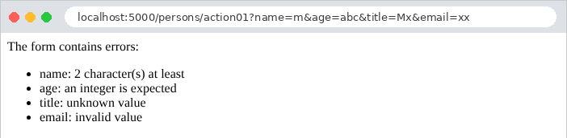

3. El modelo de la acción
Una acción necesita información enviada por el navegador: los parámetros de la URL ([?name=martin&age=42]), los campos de un formulario, el cuerpo JSON de la solicitud y, a veces, un encabezado de la solicitud HTTP. El curso original llama a toda esta información el modelo de la acción. Este capítulo muestra cómo una acción obtiene esta información, la convierte al tipo correcto y la valida. Este proceso se llama enlace de datos (data binding).
[Flask] es aquí mucho más minimalista que otros frameworks: da acceso a la información de la solicitud en forma de cadenas de caracteres y no hace más. Convertir ["42"] en el entero 42, verificar que un nombre tenga al menos dos caracteres y ensamblar los campos en un objeto: todo esto es responsabilidad de la aplicación. Lo haremos primero a mano (ejemplo 07) y luego con la biblioteca [Pydantic] (ejemplos 08 a 12), que describe un modelo mediante una clase en la que cada campo especifica su tipo y sus restricciones. En el próximo capítulo, los formularios HTML se manejarán con otra biblioteca, [WTForms], diseñada específicamente para ellos; [Pydantic] sigue siendo la herramienta natural para los parámetros de una URL y para los cuerpos JSON de la API.
Nota sobre la terminología: en el capítulo siguiente, la palabra “modelo” designará principalmente los datos que una acción transmite a su vista. El modelo de una acción, tal como se usa en este capítulo, es lo que ella recibe.
Los ejemplos 07 a 12 se ejecutan igual que los del capítulo anterior: abra un terminal en el directorio del ejemplo, con el entorno virtual activado ([python app.py]); [Ctrl-C] detiene el servidor. Sus archivos [app.py] son todos similares: una fábrica [create_app] que crea la aplicación, configura el proveedor JSON (acentos conservados, claves en su orden original; vea el ejemplo 03) y registra un blueprint. Solo los comentaremos cuando introduzcan algo nuevo.
3.1. Ejemplo 07: los parámetros de la URL
Los parámetros de la URL son la porción que sigue a [?]: [?name=martin&age=42]. Esta porción se llama cadena de consulta (*query string*). Cada parámetro es un par [name=value]; los pares se separan con [&]. El archivo [controllers/parameters.py]:
- línea 11: [request.args] contiene los parámetros de la URL, ya decodificados por [Werkzeug]. Es un diccionario especial, un [MultiDict], que, como veremos en el ejemplo 10, acepta varios valores por clave. Su método [get] devuelve el valor de un parámetro, o [None] si está ausente. A diferencia de [request.args["name"]], que lanzaría una excepción ante un parámetro ausente, [get] nunca provoca un error;
- línea 12: la acción muestra el valor y su tipo: [type(x)] es la clase de [x], y [__name__] es el nombre de esa clase. Un valor obtenido de la URL es siempre una cadena ([str]);
- línea 19: el parámetro [type] de [get] especifica una función de conversión que se aplica a la cadena: en este caso, [int], la clase de los enteros, cuya llamada [int("42")] devuelve 42. Si la conversión falla ([int("abc")] lanza un [ValueError]), [get] devuelve [None], igual que ante un parámetro ausente: la acción no puede distinguir los dos casos y el error de entrada pasa inadvertido;
- Líneas 26–35: un parámetro obligatorio y una conversión manual que distingue entre los dos errores posibles. [abort(400, message)] termina la acción con una respuesta 400 (*Bad Request*: la solicitud no es válida), acompañada del mensaje (véase el ejemplo 03). La instrucción [try] / [except ValueError] captura la excepción lanzada por [int];
- línea 42: un valor predeterminado, que se usa si falta el parámetro (o si su conversión falla). Es un caso típico para el número de página de una lista;
- línea 50: no es obligatorio que la variable [Python] tenga el mismo nombre que el parámetro de la URL. Los motores de búsqueda suelen usar un parámetro corto, [q] (*query*);
- línea 57: [to_dict()] convierte [MultiDict] en un diccionario [Python] estándar (conservando solo el primer valor de cada parámetro), que la acción devuelve como respuesta: [Flask] lo transforma en JSON (véase el ejemplo 03).
Probemos cada acción con [curl]. Un parámetro presente y luego ausente:
Las comillas alrededor de la URL son necesarias en una terminal: sin ellas, el shell interpretaría [&] (que ejecuta un comando en segundo plano en [Linux]) y [?]. Un valor que contenga espacios o caracteres especiales debe estar codificado en la URL: un espacio se convierte en [%20], y [&] se convierte en [%26] (de lo contrario, separaría dos parámetros). El navegador lo hace automáticamente; con [curl], hay que escribirlo explícitamente. [Werkzeug] decodifica el valor antes de almacenarlo en [request.args]:
La conversión mediante [type=int], que primero tuvo éxito y luego falló:
El parámetro obligatorio de la acción 03, ausente y luego no válido:
El valor predeterminado y el parámetro renombrado:
Por último, todos los parámetros a la vez. El parámetro [name] aparece dos veces: [to_dict()] conserva solo el primer valor.
La edad siguió siendo una cadena (["42"], entre comillas en JSON): no se solicitó ninguna conversión. En un navegador (aquí [Chromium]), el JSON aparece en una sola línea: [Flask] solo indenta el JSON en modo de depuración, y la captura de pantalla se tomó sin él; la casilla “Pretty-print” lo mostraría indentado. Por cierto, la barra de direcciones muestra la codificación de los caracteres acentuados en la URL ([é] se convierte en [%C3%A9], con sus dos bytes en [UTF-8]):

Este primer ejemplo ilustra los límites del enfoque manual: para cada parámetro, hay que escribir la lectura, la conversión y el tratamiento de los valores ausentes y de los errores. Con diez parámetros, el código de la acción quedaría abrumado por estas verificaciones. Es preferible describir lo que se espera y dejar que una biblioteca se encargue de la verificación. Ese es el objetivo del siguiente ejemplo.
3.2. Ejemplo 08: un modelo de acción descrito por una clase
[Pydantic] es la biblioteca de validación de datos más utilizada en [Python] (es el núcleo del framework [FastAPI]). Describe los datos esperados mediante una clase: cada atributo tiene un tipo y, opcionalmente, restricciones. [Pydantic] se encarga de convertir los datos recibidos a esos tipos y de validar las restricciones. Se instala en el entorno virtual del ejemplo (archivo [requirements.txt]).
3.2.1. El modelo: models/person.py
- Línea 8: Un modelo [Pydantic] es una clase que hereda de [BaseModel]. Sus atributos se declaran a nivel de clase, junto con sus tipos, como en una [dataclass] (ejemplo 06);
- Línea 10: la configuración del modelo. [str_strip_whitespace=True] elimina los espacios que rodean las cadenas recibidas: un nombre ingresado como [" martin "] se convierte en ["martin"] antes de ser validado. El atributo [model_config] no es un campo del modelo: [Pydantic] reconoce este nombre reservado;
- Línea 13: el campo [name]. [Annotated[str, Field(...)]] se lee “el tipo [str], anotado con [Field(...)]”. [Annotated], del módulo estándar [typing], permite adjuntar información adicional a un tipo, información que [Python] ignora pero que las bibliotecas leen: aquí, las restricciones de [Pydantic], una longitud de 2 a 20 caracteres ([min_length], [max_length]). El campo no tiene valor predeterminado: es obligatorio;
- línea 15: el tipo [int]: [Pydantic] convierte la cadena ["42"] en el entero 42, y rechaza ["abc"]. Las restricciones [ge] (*greater or equal*) y [le] (*less or equal*) limitan el valor. También existen [gt] y [lt] para las desigualdades estrictas;
- línea 17: [Literal["Mr", "Mme", "Melle"]] es el tipo de los tres valores enumerados, y solo de ellos;
- línea 19: [EmailStr] es el tipo de una dirección de correo electrónico; [Pydantic] valida su sintaxis mediante la biblioteca [email-validator] (que también instala [requirements.txt]). [EmailStr | None]: una dirección, o [None]. El valor predeterminado [= None] hace que el campo sea opcional.
Este modelo describe los datos esperados; no contiene instrucciones de validación. Esto se conoce como un estilo declarativo.
3.2.2. La acción: controllers/persons.py
- Línea 16: el método de clase [model_validate] crea un objeto [PersonModel] a partir de un diccionario, en este caso el que contiene los parámetros de la URL. Realiza dos operaciones, en este orden: - el enlace (binding): cada valor del diccionario se asigna al campo del mismo nombre, tras convertirlo al tipo del campo (["42"] → 42); - la validación: se verifican las restricciones de cada campo (longitud, límites, valores permitidos, etc.).
- Si alguno de los dos pasos falla, [model_validate] lanza una excepción [ValidationError], que contiene una lista de todos los errores (no solo el primero). La acción no la maneja: se detiene; veremos quién se encarga de ella;
- línea 19: [model_dump()] devuelve el objeto como un diccionario, que [Flask] puede convertir a JSON;
- línea 20: el tipo de la edad, para mostrar que la conversión se realizó.
3.2.3. Manejo de errores: app.py
- Líneas 17–21: el decorador [@app.errorhandler(ValidationError)] registra un manejador de excepciones: cuando una acción lanza una [ValidationError] (o una excepción de una clase derivada), [Flask] llama a esta función, pasándole la excepción como parámetro, y devuelve su valor de retorno como respuesta. Al estar declarado a nivel de la aplicación, el manejador se aplica a todas sus acciones: toda acción que valide un modelo se beneficia de él, sin tener que escribir una sola línea de código de manejo de errores;
- Línea 19: [e.errors()] devuelve la lista de errores. Cada error es un diccionario; conservamos dos datos: [loc] (*location*), el campo afectado, en forma de tupla ([("name",)]; véase el ejemplo 10 para una tupla más larga), y [msg], el mensaje. La expresión [[... for err in e.errors()]] es una comprensión de listas: construye una lista aplicando la expresión de la izquierda a cada elemento;
- línea 21: una tupla [(body, code)] (véase el ejemplo 03): un diccionario, convertido a JSON, y el código 400.
3.2.4. Ejecución
Una entrada válida:
La edad efectivamente se convirtió en un entero (sin comillas en JSON), y la dirección ausente es [None] ([null] en JSON). Un nombre rodeado de espacios ([%20]) y una dirección presente:
Sin parámetros: faltan los tres campos obligatorios.
Cuatro campos no válidos a la vez:
Todos los errores se informan a la vez, lo que permite al usuario corregirlo todo de una sola vez. Los mensajes están en inglés: [Pydantic] no está traducido. El siguiente ejemplo los reemplaza por mensajes propios.
3.3. Ejemplo 09: Validación realizada por la acción
En el ejemplo 08, un formulario no válido interrumpe la acción, y responde el manejador de la aplicación. Esto resulta cómodo para una API, cuyos clientes son programas que esperan una respuesta de error estandarizada. Sin embargo, una página web suele preferir volver a mostrar el formulario con los mensajes de error: en ese caso, la acción debe decidir cómo tratar un modelo no válido. El modelo [models/person.py] es el del ejemplo 08.
3.3.1. Mensajes personalizados: models/messages.py
- Líneas 5–14: cada error de [Pydantic] tiene un tipo y un identificador único (["missing"] para un campo ausente, ["string_too_short"] para una cadena demasiado corta, etc.), independiente del mensaje en inglés. El diccionario [MESSAGES] asocia un mensaje propio a cada tipo. Algunos contienen etiquetas como [{min_length}], [{ge}]...: la documentación de [Pydantic] proporciona, para cada tipo de error, los valores de su contexto;
- líneas 20–21: el nombre del campo que causa el error, tomado de la tupla [loc]. [".".join(...)] ensambla los elementos de la tupla, convertidos en cadenas, separándolos con puntos;
- líneas 25–30: nuestro propio mensaje de error. [MESSAGES.get(...)] devuelve [None] para un tipo de error que no se encuentra en el diccionario; en ese caso, se usa el mensaje en inglés de [Pydantic]. En caso contrario, [format] reemplaza cada aparición de [{name}] en el mensaje por el valor del mismo nombre del contexto: ["{min_length} character(s) at least".format(min_length=2)] produce ["2 character(s) at least"]. La notación [**dictionary] pasa las entradas del diccionario como parámetros con nombre; [error.get("ctx", {})] devuelve un diccionario vacío para un error sin contexto.
Esta técnica (traducir según el tipo de error) es la que se usa en el caso de estudio: allí los mensajes se identifican mediante claves, que se traducen al idioma del usuario.
3.3.2. La acción: controllers/persons.py
- Líneas 14–19: la propia acción intercepta la [ValidationError] dentro de un bloque [try] / [except]. Si se produce un error, construye una lista HTML de errores ([<ul>], una etiqueta [<li>] por error);
- línea 22: si tiene éxito, un mensaje de bienvenida. El nombre se pasa por la función [escape] de la biblioteca [markupsafe] (instalada con [Flask]). [escape] reemplaza los caracteres que tienen significado en HTML ([<], [>], [&], ["], [']) por sus entidades ([<], [>]...): se mostrarán tal cual en lugar de ser interpretados. Sin esta precaución, un usuario podría ingresar un “nombre” que contenga HTML, o incluso [JavaScript], que se ejecutaría en el navegador de cualquiera que viera la página. Esta es la vulnerabilidad de seguridad más común en la web: la inyección de scripts (*XSS*, *cross-site scripting*). El título y la edad no requieren esta protección: sus valores han sido validados por el modelo (uno de tres valores permitidos, un entero). En el próximo capítulo, el motor de vistas [Jinja2] realizará este escape automáticamente para cualquier valor insertado en una página.
Una entrada válida, seguida de una entrada con cuatro errores:


La respuesta sin procesar a la segunda solicitud, y la respuesta para un nombre que contiene HTML:
El nombre [<b>martin</b>] (codificado como [%3Cb%3E...] en la URL) se muestra tal cual, sin negrita: sus etiquetas han sido neutralizadas. Observe que esta vez la respuesta tiene un código de estado 200: esto se debe a que la acción optó por devolver una página normal que contiene los errores.
3.4. Ejemplo 10: Parámetros múltiples
El mismo parámetro puede aparecer varias veces en una URL: [?color=red&color=green]. Esto es lo que envía un navegador para un grupo de casillas de verificación con el mismo nombre, o para una lista de selección múltiple (véase el próximo capítulo). El archivo [controllers/arrays.py]:
- línea 14: [get] devuelve únicamente el primer valor del parámetro;
- línea 21: [getlist] devuelve todos sus valores en una lista, que está vacía si falta el parámetro. Esta es la característica distintiva de [MultiDict]: conserva la lista de valores de cada clave;
- líneas 27–34: la lista se valida mediante un modelo [Pydantic]. Esta vez, el modelo se construye con una llamada estándar, [ChoiceModel(color=colors)], con los campos pasados como parámetros con nombre: esto equivale a [model_validate] sobre un diccionario. El objeto creado no sirve para nada más que para validar: no se conserva. La expresión [not errors] equivale a [True] para una lista vacía.
El modelo [models/choice.py]:
- Línea 10: el tipo [list[Literal["red", "green", "blue"]]] es el de una lista en la que cada elemento es uno de tres colores. La restricción [min_length=1], aplicada a una lista, se refiere al número de elementos: debe haber al menos uno.
El archivo [models/messages.py] es el del ejemplo 09. Los resultados:
La validación primero tuvo éxito, luego falló por un color desconocido y después por una lista vacía:
El error de “valor desconocido” se refiere a [color.1]: la tupla de error [loc] es [("color", 1)]; el campo y el índice del elemento problemático en la lista (el segundo, con los índices comenzando en 0).
3.5. Ejemplo 11: Los parámetros de una solicitud POST
Los ejemplos anteriores usaban solicitudes GET, cuyos parámetros están contenidos en la URL. Una solicitud POST transporta sus datos en su cuerpo, en dos formas principales:
- campos de un formulario HTML: el cuerpo tiene la misma sintaxis que una cadena de consulta ([name=martin&age=42]), y su tipo (encabezado [Content-Type]) es [application/x-www-form-urlencoded];
- un documento JSON, enviado por un programa ([JavaScript] en una página, cliente de una API...): el tipo es [application/json].
El archivo [controllers/post.py]:
- línea 13: [post.post(...)]: el primer [post] es el blueprint, el segundo es el método que declara una ruta para el método HTTP POST (véase el ejemplo 02);
- línea 16: [request.content_type] es el encabezado [Content-Type] de la solicitud;
- línea 18: [request.form] contiene los campos de un formulario enviado por POST. Al igual que [request.args], es un [MultiDict]. [to_dict(flat=False)] crea en realidad un diccionario donde cada valor es la lista de valores del campo;
- línea 26: [request.get_json()] deserializa un cuerpo JSON: el texto JSON se convierte en un objeto [Python] (un diccionario para un objeto JSON, una lista para un arreglo JSON...). Si el cuerpo no está declarado como JSON, [get_json] provoca un error 415 (*Unsupported Media Type*); si lo está, pero el texto está mal formado, se produce un error 400;
- línea 32: un campo, interpretado como parámetro de la URL;
- líneas 38–45: el modelo [PersonModel] del ejemplo 08, esta vez vinculado a los campos del formulario. El código es el mismo que con los parámetros de la URL: solo cambia el origen del diccionario. [sorted] ordena los mensajes para garantizar una respuesta coherente.
Con [curl], la opción [-d] (*data*) envía un cuerpo; la solicitud pasa entonces a ser una solicitud POST, de tipo [application/x-www-form-urlencoded], a menos que la opción [-H] (*header*) especifique un tipo diferente. La opción [-X POST] establece explícitamente el método (aquí es opcional). Los campos de un formulario, incluido un campo repetido:
Un cuerpo JSON, que contiene un entero y un arreglo:
Las comillas del JSON van precedidas de un [\] para evitar que termine la cadena del comando; en [Linux] y [macOS], también se puede encerrar el JSON entre apóstrofos: [-d '{"name": "martin"}']. A diferencia de los campos de formulario, el JSON transporta tipos de datos: la edad ya es un entero. Un cuerpo que no es JSON, seguido de un JSON mal formado:
Un solo campo, y luego la misma URL solicitada mediante GET:
La URL existe, pero no para el método GET: [Flask] devuelve un 405 (*Method Not Allowed*), y su encabezado [Allow] enumera los métodos aceptados ([OPTIONS] es manejado automáticamente por [Flask] para cualquier ruta). Por último, el modelo vinculado a los campos del formulario, primero válido y luego no válido:
3.6. Ejemplo 12: Enlace (binding) y validación personalizados
Los tipos estándar no siempre son suficientes. Este ejemplo muestra tres maneras de ampliar el enlace (binding) y la validación:
- un convertidor de ruta: una fecha en formato francés, [23-09-2026], en la ruta de la URL;
- un decorador que proporciona a la acción un parámetro que no proviene de la URL, sino de un encabezado HTTP;
- tipos “personalizados” para [Pydantic]: una restricción (sin espacios) y una conversión (una fecha [dd/mm/yyyy]).
3.6.1. Un convertidor de ruta: binding/date_fr.py
En el ejemplo 02, nos encontramos con los convertidores de [Werkzeug]: [<int:id>] acepta solo un entero y lo convierte. Es posible escribir convertidores nuevos.
- línea 9: un convertidor es una clase que hereda de [BaseConverter];
- línea 11: el atributo [regex] es una expresión regular que describe el formato del segmento de ruta aceptado: [\d] designa un dígito, [{2}] designa la repetición del elemento anterior, en este caso, dos dígitos. El prefijo [r] en la cadena (*raw string*) impide que [Python] interprete [\]. El enrutamiento solo intenta usar este convertidor en un segmento de ruta con esta forma;
- líneas 14–20: [to_python] transforma el texto de la ruta en un objeto [Python], en este caso un [date]. [datetime.strptime] (*string parse time*) analiza una cadena según un formato específico: [%d] para el día, [%m] para el mes y [%Y] para el año de cuatro dígitos; [.date()] conserva la fecha sin la hora. [strptime] verifica que la fecha exista: [31-02-2026] tiene el formato correcto, pero lanza un [ValueError]. El convertidor lanza entonces la excepción [ValidationError] de [Werkzeug] (que no debe confundirse con la de [Pydantic]): para el enrutamiento, la ruta no coincide con la URL, lo que producirá un error 404 si ninguna otra ruta coincide con ella;
- líneas 23–24: la operación inversa, utilizada por [url_for] para construir una URL a partir de una fecha. [strftime] (*string format time*) da formato a una fecha.
El convertidor se registra en [app.py]:
- Línea 12: [app.url_map] es la tabla de enrutamiento de la aplicación; su diccionario, [converters], asocia un nombre a cada convertidor ([int], [path]...). Añadimos el nuestro, con el nombre [datefr]. La entrada debe preceder a las de los blueprints que lo utilizan.
3.6.2. Un parámetro proporcionado por un decorador: binding/language.py
Una acción [Flask] recibe como parámetros las variables de la ruta, y nada más. Para proporcionarle información adicional, podemos decorar la acción: el decorador reemplaza la acción por una función que calcula la información y luego llama a la acción pasándole esa información.
- Línea 9: un decorador es una función que recibe una función (en este caso, la acción) y devuelve otra función (véase el ejemplo 01). Escribir [@with_language] encima de [def hello(...)] equivale a escribir, después de la definición, [hello = with_language(hello)];
- Línea 13: la función que reemplazará a la acción. [*args] recibe los parámetros posicionales en una tupla, y [**kwargs] (*keyword arguments*) recibe los parámetros con nombre en un diccionario. Así es como [Flask] pasa las variables de la ruta ([id=3]): la función las recibe sin necesidad de conocerlas;
- línea 16: se agrega un parámetro con nombre, [language]. [request.accept_languages] es el encabezado de solicitud [Accept-Language], que ya fue analizado por [Werkzeug]. Aquí el navegador especifica los idiomas del usuario, por orden de preferencia: [fr-FR,fr;q=0.9,en;q=0.8] (el coeficiente [q] mide la preferencia, en una escala de 0 a 1). [best_match] selecciona, entre los idiomas que ofrece la aplicación, el que prefiere el usuario, o el valor [default] si ninguno es adecuado;
- línea 17: la llamada a la acción original, con los parámetros recibidos y el nuevo. Las notaciones [*args] y [**kwargs] desempaquetan esta vez la tupla y el diccionario en parámetros;
- línea 12: la función [action_with_language] conserva el nombre ([__name__]) y la documentación de la acción. Esto es esencial aquí: [Flask] nombra cada ruta con el nombre de su función (el [hello] de [url_for("examples.hello")]), y se negaría a registrar dos rutas con el mismo nombre, [action_with_language], si dos acciones usaran el decorador.
Veremos este enfoque a lo largo del curso: los decoradores [@login_required] y [@role_required] del capítulo sobre autenticación se construyen de la misma manera.
3.6.3. Tipos “personalizados” para Pydantic: binding/types.py
- Líneas 11–14: una función de validación: recibe como entrada el valor del campo, lo devuelve si es válido y, en caso contrario, lanza un [ValueError] . El mensaje de la excepción se convierte en el mensaje del error de validación;
- línea 19: el tipo [NoSpace] es el tipo [str], anotado con [AfterValidator(no_space)]: [Pydantic] llamará a la función después de verificar (y, si es necesario, convertir) el valor a [str]. Esto permite definir, una sola vez, un tipo que puede reutilizarse en todos los modelos, igual que un tipo ordinario;
- Líneas 24–30: una función de conversión. El tipo
***[date]de*[Pydantic]acepta cadenas en el formato internacional,***[2026-09-23]; nosotros queremos el formato francés,***[23/09/2026]. La función recibe el valor sin procesar : si es una cadena, la convierte a [date]. Cualquier otro valor (un [date]** ya construido, por ejemplo) se devuelve tal cual; - línea 33: [BeforeValidator]: la función se llama antes de la validación del tipo [date], que por lo tanto recibe un [date] ya construido.
3.6.4. El controlador: controllers/examples.py
- Líneas 14–18: la variable de ruta [day] usa el convertidor [datefr]: la acción recibe un [date]. [url_for] construye la URL de esta misma acción a partir de la fecha, mediante el método [to_url] del convertidor. El separador [\] al final de la línea continúa la instrucción en la línea siguiente; dos cadenas literales consecutivas se concatenan;
- Líneas 23–25: el orden de los decoradores importa. Se aplican de abajo hacia arriba: [@with_language] primero transforma la acción y luego [@examples.get] guarda la función transformada en el blueprint. En el orden inverso, el blueprint guardaría la acción original, y el parámetro [language] nunca se proporcionaría;
- líneas 30–32: un modelo que usa los dos tipos “personalizados” como si fueran tipos ordinarios. Ambos campos son opcionales;
- líneas 45–49: un manejador de excepciones, esta vez declarado en el blueprint: solo maneja las excepciones lanzadas por las acciones de este blueprint. [removeprefix] elimina el prefijo ["Value error, "] del mensaje, que [Pydantic] agrega a los mensajes de [ValueError]. La respuesta es una tupla de tres elementos: el cuerpo, el código y un diccionario de encabezados (véase el ejemplo 03), en este caso para una respuesta en texto sin formato.
3.6.5. Ejecución
El convertidor de ruta:
La fecha es mostrada por [Python] en en formato internacional (este es el resultado de convertir un [date] en cadena), pero la URL construida por [url_for] ha vuelto al formato francés. El 31 de febrero no existe: 404. Una fecha en formato internacional, [2026-09-23], no coincide con el patrón descrito por la expresión regular: también 404.
El decorador. La opción [-H] de [curl] establece el encabezado [Accept-Language]:
Sin un encabezado [Accept-Language] ([curl] no envía ninguno), se usa el idioma predeterminado. El capítulo sobre internacionalización retomará este tema, con la selección del idioma por parte del usuario.
Tipos “personalizados”:
3.6.6. Conclusión
Resumamos los métodos de que dispone una acción para obtener su modelo:
Origen | Método |
Variables de ruta | los parámetros de la acción, tipados por los convertidores ([<int:id>], [<datefr:day>]) |
Parámetros de la URL | [request.args]: [get] (junto con [type] y [default]), [getlist], [to_dict] |
Campos de un formulario POST | [request.form], un [MultiDict], y un [request.args] |
Cuerpo JSON | [request.get_json()] |
Encabezados | [request.headers], y objetos ya analizados, como [request.accept_languages] |
Conversión y validación | un modelo [Pydantic]: [model_validate], [ValidationError], [e.errors()] |
Errores comunes | [@app.errorhandler] (toda la aplicación) o [@blueprint.errorhandler] (un blueprint) |
Parámetro calculado | Un decorador que agrega un parámetro con nombre a la acción |
Los formularios HTML, en cambio, requieren algo más que validación: deben mostrarse, volver a mostrarse con los datos ingresados por el usuario y los posibles errores, y protegerse contra solicitudes falsificadas. Este será el papel de [WTForms], que se tratará en el próximo capítulo, una vez presentadas las vistas.